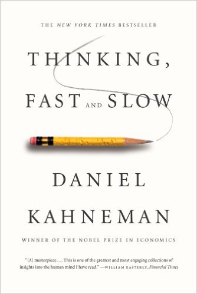
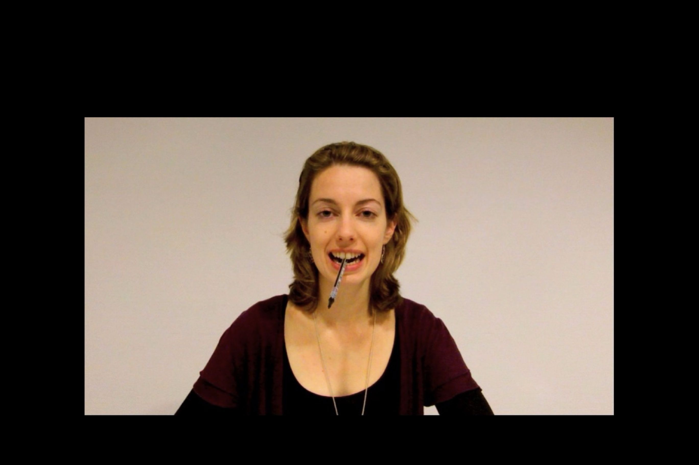

從科學危機認識開放科學(科學月刊投稿版)

「Thinking, Fast and Slow」(中譯：快思慢想)是諾貝爾經濟學獎得主丹尼爾．卡尼曼(Daniel Kahneman)於2011年出版的心理學科普好書，各國譯本至今仍保持不錯的暢銷度。然而出版的同一年，許多社會心理學研究無法再現的批評逐漸浮出檯面。在「快思慢想」的第四章裡，卡尼曼引用大量的社會心理學「促發效應研究」(Priming Effect)，為他所定義的「系統一」提供研究證據。這類研究的模式是比較兩組受試者在不同情境的安排裡，運用設計好的量尺對研究者 設定的目標進行價值判斷，研究者以組間判斷的差異推論情境存在導致「促發效應」的原因。「促發效應研究」假設其中一種情境能引發受試者內隱聯想(implicit association)，無意識地影響價值判斷。然而，卡尼曼在這一章所引用的一系列研究，已經被確認或推測難以在接近的條件下再現。這個例子顯示原來只有心理學家與統計學家關注的心理科學危機(Crisis in Psychological Science)，有可能演變為科普危機(Crisis in Popular Science)。
本文以「快思慢想」第四章引用，證實臉部表情回饋假說(Facial Feedback Hypothesis)實質性的經典實驗，如何被確認難以再現的故事，介紹科學家為扭轉這一連串危機而啟動的開放科學運動(Open Science)。臉部表情回饋假說在「快思慢想」上市之前就在許多心理學課程中講授，最廣為人知是1988年德國心理學家弗列茲．斯崔克(Fritz Strack)報告的實驗結果。他請兩組受試者用嘴巴含住原子筆，以這樣的姿勢在評分紙上，為五則幽默漫畫的好笑程度評分。其中一組用牙齒咬住，自然呈現微笑表情(見圖一)，另一組用嘴唇含筆，呈現無情緒的表情(見圖二)。斯崔克發現前者的評分顯著高於後者，可證實臉部表情回饋假說的合理性。後續研究稍微更改原始操作，像是請受試者以嘴巴含著筆，用手做反應，但是得到的結果各不相同。然而更重要的是，原始研究從未在相同的條件下重覆驗證，研究內容又經過許多教科書與科普作品的間接轉述，讓很多人以為只要像圖一的女孩一樣含著筆，心情自然就會好起來。
嘴唇含筆示範圖。取自示範投影片。

牙齒含筆示範圖。取自示範投影片。開放科學面對的挑戰
科學危機的直接影響反映在兩大課題：如何確認高影響力實驗結果的可再現性？如何扭轉多數人的既定認識？兩個課題涵蓋開放科學所關注的六大面向：開放源碼(Open Source)、開放資料(Open Data)、開放方法(Open Methodology)、開放的同儕評審(Open Peer Review)、開放取用(Open Access)與開放的教育資源(Open Educational Resource)。讓我先用臉部回饋假設的再現研究，解說第一個課題牽涉的開放源碼 、開放資料 、開放方法 與開放的同儕評審 等四項宗旨。這四項構成荷蘭阿姆斯特丹大學的艾瑞克傑．維格馬克斯(Eric-Jan Wagenmakers)所發起的註冊再現研究(Registered Replication Research)。註冊再現研究是曾出版科普書「為什麼你沒看見大猩猩」的認知心理學家丹尼爾．西蒙斯(Daniel Simons)與心理科學觀點(Perspectives on Psychological Science)期刊主編史蒂芬．林賽(Stephen Lindsay)一起制定的合作研究發表模式。註冊再現研究是針對學術圈內廣泛引用，但是未曾完整檢驗可再現性的研究。提出計畫的發起者必須招募有興趣的實驗室，同時以幾乎接近的條件進行獨立的再現研究。為了讓各實驗室以儘可能相同的條件進行研究，發起者要先提出經過同儕評審的公開協議書及附件，內容包括完整的實驗方法、資料收集的儲存格式、可在所有參與實驗室佈署的實驗材料及設備清單，以及一致的分析程序。因此註冊再現研究的協議書具體呈現開放源碼、開放資料與開放方法在科學研究應達到的標準。加上公佈招募合作實驗之前，由原始研究者具名評審協議書內容，保障後續研究過程及發表結果的可信度。
維格馬克斯發起的再現研究招募到17間橫跨歐美的實驗室參與。受試者要評分的漫畫是事前從1988年原始研究採用的同一位漫畫家系列作品中挑選，請120位心理系學生對這一系列漫畫的好笑程度評分，最後挑選平均評分屬於中度好笑的四則做為正式實驗的材料。實驗中評分的用紙都與斯崔克的原始實驗相同，為從0分(我覺得不好笑)到9分(我覺得很好笑)的十點量尺，要受試者含住的原子筆也選用外形幾乎一模一樣的品牌。重要的不同處置是採用統一的影片向受試者解說實驗流程，取代原始研究的口頭解說，以及每個實驗室招募的受試者人數比原始研究(兩組共92人)多出一些(兩組至少各50人)。由於協議書設定如果受試者表示做實驗之前就已經知道這個實驗，這些受試者的資料就不納入正式分析，所以最後有三個實驗室的資料未達到設定的人數。
原始研究的兩組評分差異達到0.82分，有達到最起碼的統計顯著水準(p值是0.03)。17間實驗室的再現結果只有九間得到正向的差異分數，而且最大的差異分數只有0.35分，沒有一間的差異分數達到統計顯著水準。維格馬克斯還計算每個實驗室結果的貝氏因子(Bayes Factor)，評估每個實驗室結果的證據強度。相較於p值僅呈現無效果的假設為真，而獲得當下結果的機率，貝氏因子呈現有效果的假設為真而獲得當下結果，對比無效果的假設為真而獲得當下結果的賠率。有最起碼證據強度的實驗結果，貝氏因子至少要大於1，然而17間實驗室沒有一間的結果出現大於1的貝氏因子。
雖然沒有實驗室能成功再現斯崔克的原始研究，不表示可以百分之百地否定臉部表情回饋假說，但是維格馬克斯主持的再現研究，就像探索頻道的知名節目「流言終結者」一樣，信服報告結果的讀者可以開始反向宣傳「假裝微笑不能讓你真的心情變好」。然而報告是篇正經八百的學術論文，必須經過科學家或作家改寫成通俗易懂的材料，才容易向大眾傳播。這正是開放科學要挑戰的第二道課題：如何扭轉多數人的既定認識？開放科學的應對之道就是開放取用 與開放的教育資源 。
開放取用是指對第一手科學新知有興趣的人士，能直接取得研究文獻的完整內容。維格馬克斯所在的荷蘭，應該是現在世界各國推動開放取用最有策略，而且最有成效的國家，請容我節錄自己的網誌「開放科學在荷蘭」的部分內容：
…現在實踐開放取用的具體作為有兩種途徑：一種是論文作者個人實踐的綠色途徑(Green Route)，另一種是由出版社發行開放取用期刊的黃金途徑(Gold Route)。
綠色途徑是論文作者將被接受的論文手稿(post-printed manuscript)，放在公開的社群網站，讓任何人可經由網路搜尋取得。論文手稿是依既定的論文格式撰寫，提供出版社編輯排版的原始稿件。許多期刊允許作者將這類稿件放在公開的資料庫網站，如果想確定接受稿件的期刊是否允許，可利用SHERAP/RoMEO這個網站查詢，也可得知投稿的期刊支持開放取用的程度。任何有著作發表於允計公開論文手稿的研究者，都能運用合法的資料庫平台公開手稿，…
綠色途徑仰賴研究者的個人意願，如果研究者不想讓自己的著作依此模式公開，讀者就只能從出版社的付費管道索取論文。至於黃金途徑的終極目標就是要出版社提供百分之百的開放取用論文，而荷蘭的教育部與大學聯盟(VSNU)已訂出2024年讓荷蘭境內公民皆可自由取用所有科學文獻的目標，從2014年開始和Elsevier等主要學術出版社談判，並已有初步成果。VSNU將階段性成果整理成懶人包，提供世界各國參考。我摘出其中歸納的四點：(1)由最需要收藏文獻的機構首長擔任主要談判人員，例如大學校長；(2)談判人員有所屬機構的充分授權；(3)堅守底線，例如不向Elsevier要求收取額外40%出版費用妥協；(4)政策支持，也就是荷蘭教育部已宣佈的目標。
最後來談開放的教育資源。在本文談論的範圍之內，教育的功能是將遵照前五項宗旨而產生的知識成果，讓有意學習的人能取得使用。姑且不論維基百科的開放的教育資源條目，談到的幾項定義問題，我舉出兩個例子，讓讀者想想臉部表情回饋假設的再現研究，所公開的資料能如何運用於教育現場。在一般的心理學課程，如果談到斯崔克的原始研究是如何進行的，師生可以從專案網頁下載說明影片，以及要讓受試者填寫的圖紙，了解整個實驗程序。如果教學場域的空間設備允許，能直接拿來進行小型再現研究，探討17間實驗室無法成功再現的原因。另一個可以運用的教育現場是統計學課程，這份研究的分析方法結合次數主義(Frequetism)與貝氏統計(Baysian Statistics)，除了所有實驗室的原始資料，維格馬克斯還公開處理資料的R原始碼，教師能自行改編為適合學習者程度的教材；自學者能直接下載測試，了解如何產生報告裡的數據與圖表；科普作家能運用原始資料及程式碼重新組織圖表，創作更通俗易懂的作品。
從以上的說明中，我認為教育資源要有多開放，取決於研究者期許研究成果的影響力要多深多廣。要扭轉「控制表情就能控制心情」的深刻印象，需要更多的二次創作，讓更多人理解原始研究不能成功再現的原因及意義。研究內容的透明度越高，越有利有創意的科普作者生產令人深刻的二次創作。只要大略檢視造成心理科學危機的一系列研究，最明顯的共同特徵是研究內容不夠公開透明，結論卻讓人感覺有趣或顯得很重要。就此來看，未來評估一位學者的學術成就，應是看公開的研究內容如何有利其它學者規劃條件接近的再現研究，以及有利各種教育場合轉化運用的程度。
營造開放科學的有利條件
本文的最後，我想以與外國學者直接交流合作的經驗，提供有心參與開放科學的學習者、各領域需要收集數據更新知識的科學家、與願意提供資源促成發展的人士一些建議：
使用可公開且可重製的格式紀錄學習內容。 明確的建議是從今天開始，使用有版本控制(version control)功能的應用程式，管理個人學習內容。以這篇文章為例，原稿是以markdown格式編輯，編輯完成後可立刻更新至個人網頁。讀者可以從我公開的更新紀錄，了解這篇文章的製作過程。只要習慣以這樣的方式紀錄個人學習內容之後，就能有效維持公開內容的可信度。不過沒有程式設計經驗的學習者，需要一段學習時間才能掌握這套筆記系統，建議運用如open science framework等有提供版本控制的雲端平台，管理個人學習筆記。
收集資料前備份研究計畫，公開地紀錄過程中的一切行動。 這是規劃與執行註冊研究(Registered Research)的基本原則，搭配版本控制的紀錄，科學家能確保研究過程按照計畫步驟執行，並明確紀錄過程中必須改變初始設定的原因。不論最後有沒有得到支持假設的結果，報告都可以有助更新現有的知識。最重要的是，這樣的研究紀錄方式充分地將學術誠信的原則轉化為實際行動。致於為何推動開放科學可以落實學術誠信，值得寫一篇專文說明，限於月刊篇幅限制，只能在此埋個伏筆。
建置連結各項開放科學運動的中繼平台。 近幾年台灣社會出現許多以「開放資料」為核心的社會運動，也有不少各級學校教師投入有共享價值的民間教育改造計畫。除了開放取用需要政府及大學真正重視，推動其它五項開放科學宗旨的社會條件，都已經具備可觀的規模，只要有方便使用的中繼平台整合各項運動及資源，提供現役及未來的科學研究人員完整的開放科學養成教育，台灣的學術研究及教育環境很可能因此脫胎換骨。
歐盟從2016年開始的「提昇歐洲開放科學訓練品質計畫」(Facilitate Open Science Training for European Research，簡稱FOSTER)，是值得效法的參考對象。不過我認為政府不必急著出錢送人去歐洲觀摩，先分析目前台灣科研環境的優劣勢，就能了解需要建置什麼樣的平台，幫助國內優秀的科研人才，產出可信且有高品質的研究成果，回饋台灣及國際社會。